🍑 Story
「ニューあわや」は、祖父の代から続くくだもの屋です。
祖父母が徳島県から大阪に出てきて、始まったこのお店。 その名前を残したいという想いから、今も「ニューあわや」として続いています。
そんなくだもの屋の中で、ドライフルーツが生まれました。
私は小さい頃から、フルーツが少し苦手でした。 それでも、「これなら食べられる」「これならおいしい」 そう思えたのが、ドライフルーツでした。
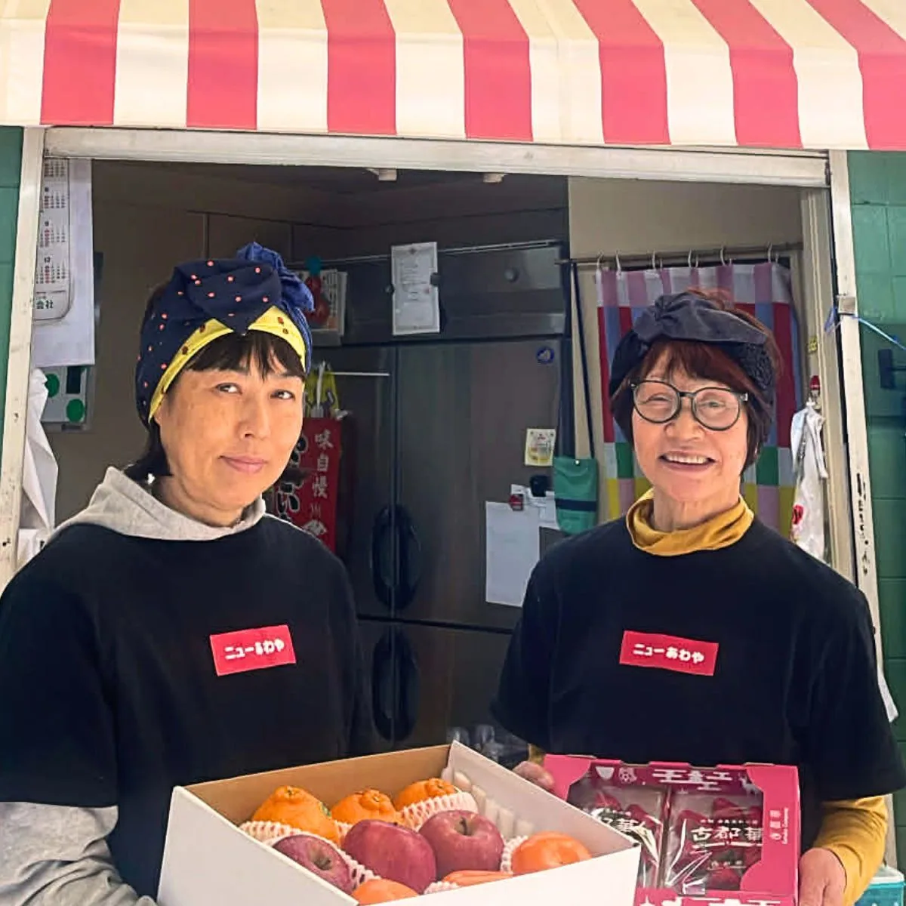
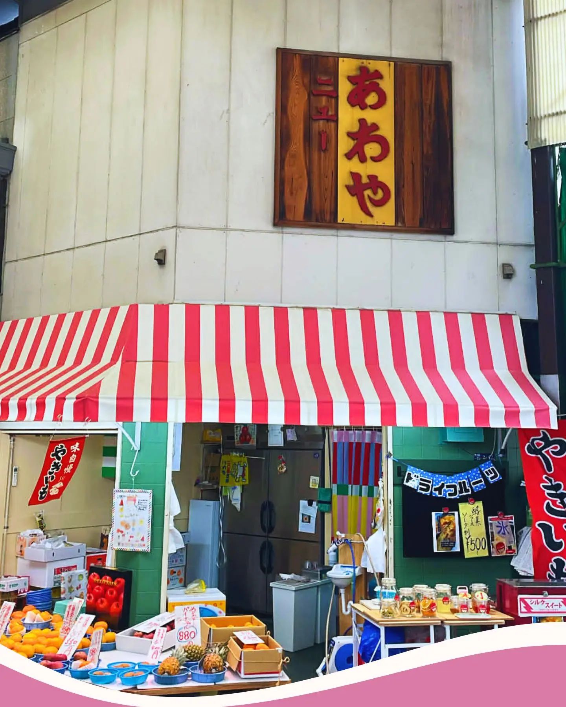
くだもの屋「ニューあわや」から生まれました。
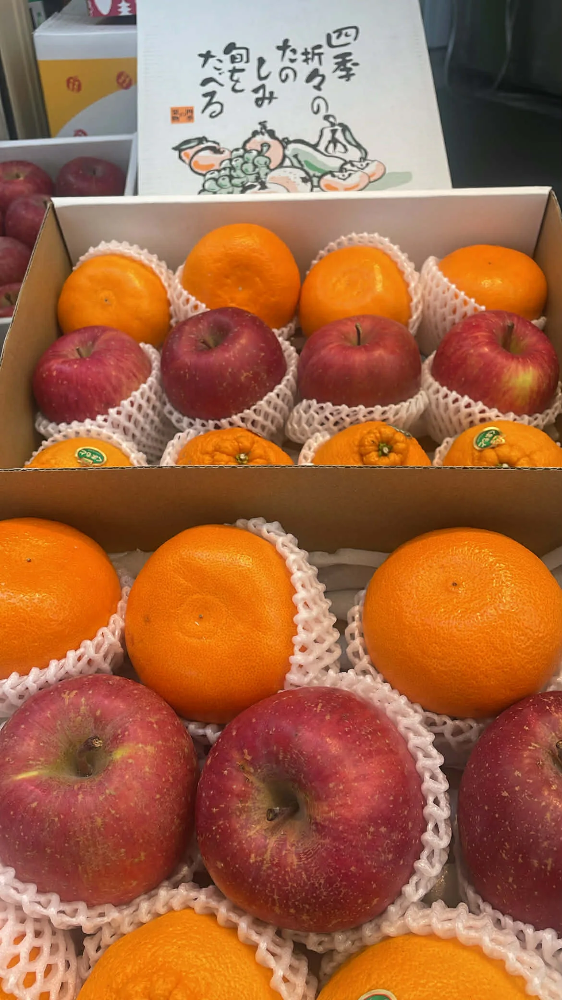
くだもの屋「ニューあわや」は、
厳選したくだものと、
ドライフルーツやジュースをお楽しみいただけるお店です。
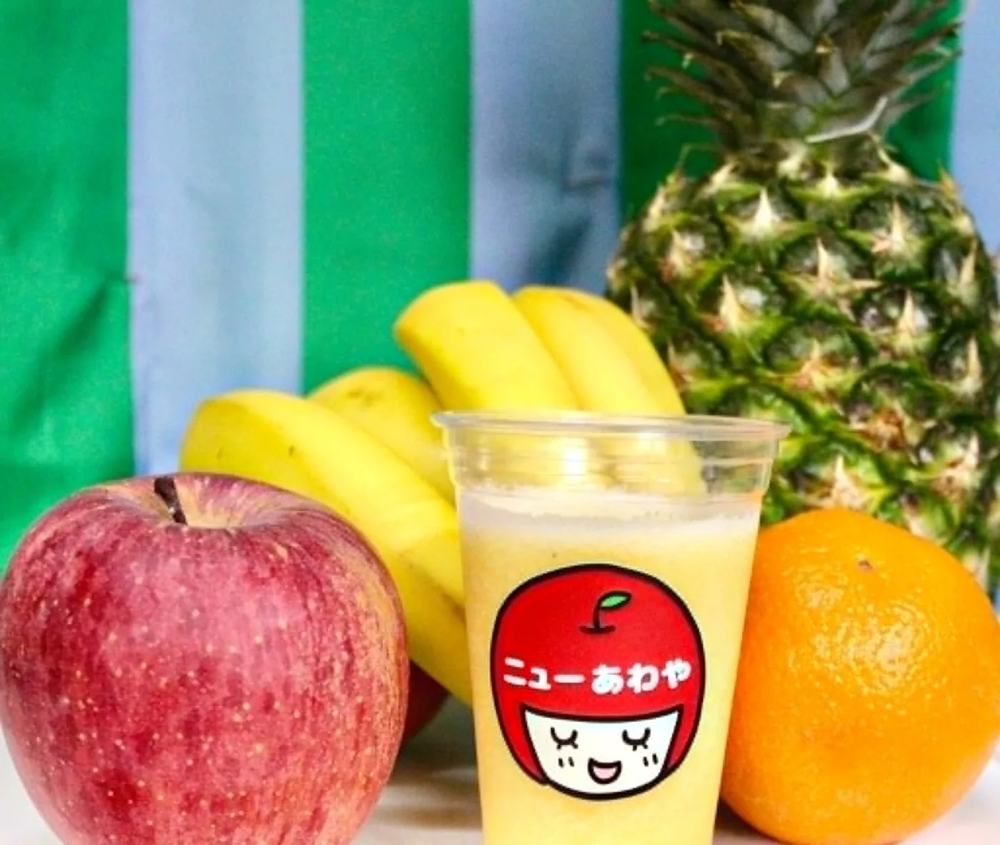
フルーツは好きだけど、
少し苦手に感じることもある。
そんな声は、八百屋をしている中でもよく聞きます。
そして私自身も、そのひとりでした。
「ニューあわや」は、祖父の代から続くくだもの屋です。
祖父母が徳島県から大阪に出てきて、始まったこのお店。 その名前を残したいという想いから、今も「ニューあわや」として続いています。
そんなくだもの屋の中で、ドライフルーツが生まれました。
私は小さい頃から、フルーツが少し苦手でした。 それでも、「これなら食べられる」「これならおいしい」 そう思えたのが、ドライフルーツでした。

ニューあわやでは、新鮮なくだものを食べていただきたいという想いから、 大量仕入れはしていません。
長年お世話になっている問屋さんと、 母が厳選したくだものだけを仕入れています。
ひとつひとつの素材を大切に、 その時いちばん良い状態のくだものをお届けしています。
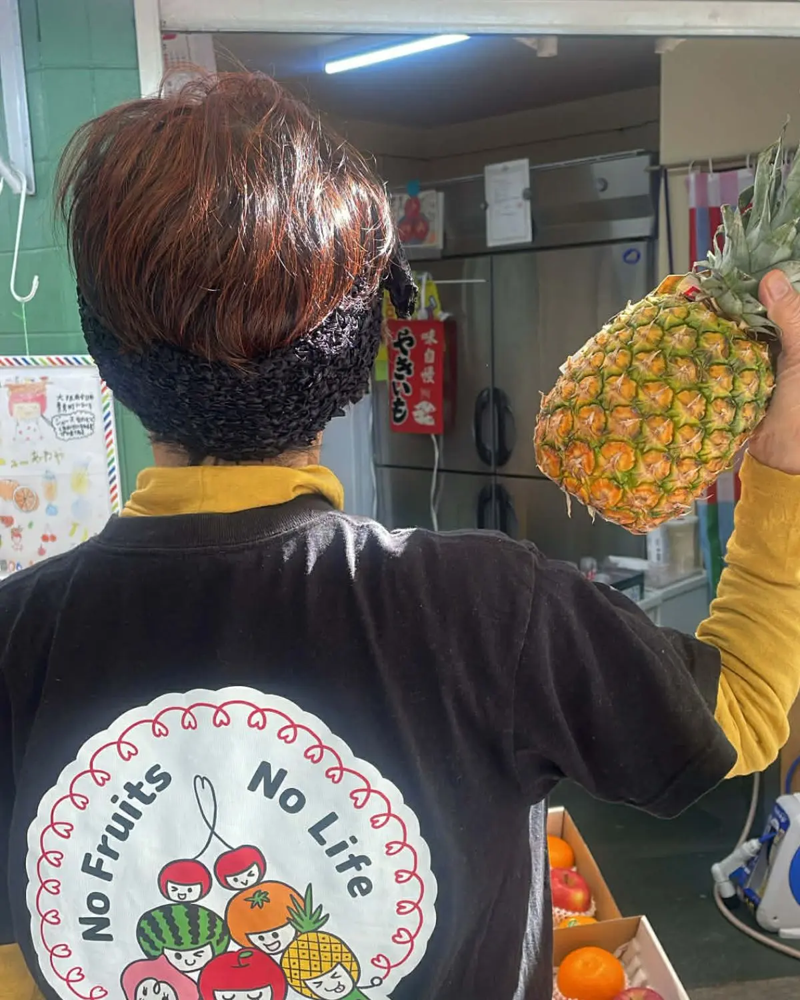
くだもの屋ならではの目利きで選んだ素材から、
ドライフルーツを作っています。
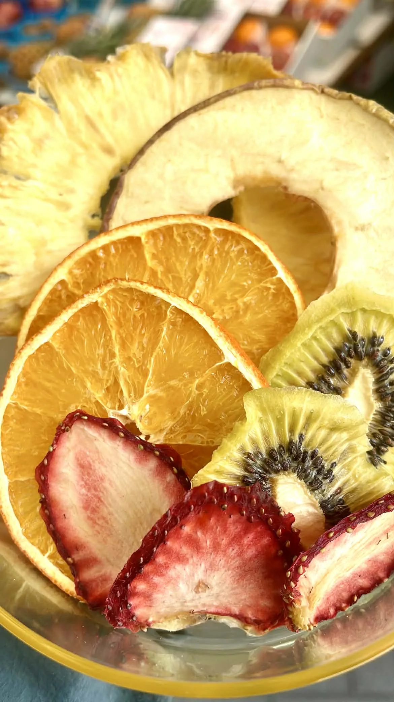
りんごやキウイ、オレンジなどの定番に加え、 季節によってさまざまなフルーツも登場します。
ヨーグルトに入れたり、紅茶に浮かべたりと、 日常の中で楽しんでいただけます。
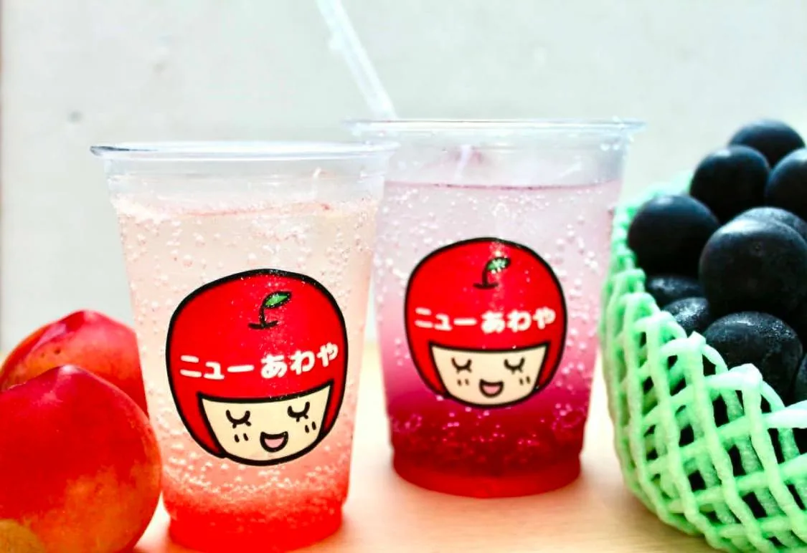
ジュースや酵素ソーダなど、 その場で楽しめるメニューもご用意しています。
そのまま食べるだけでなく、
日常の中でいろいろな楽しみ方ができます。
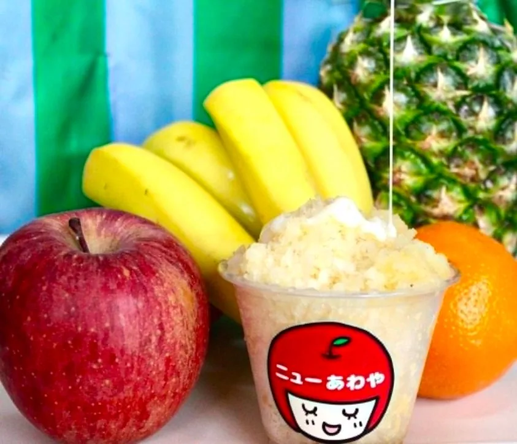
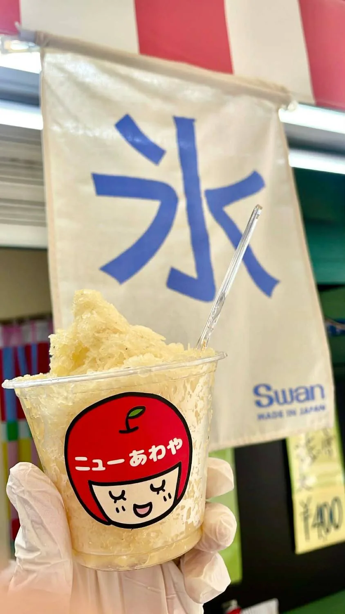
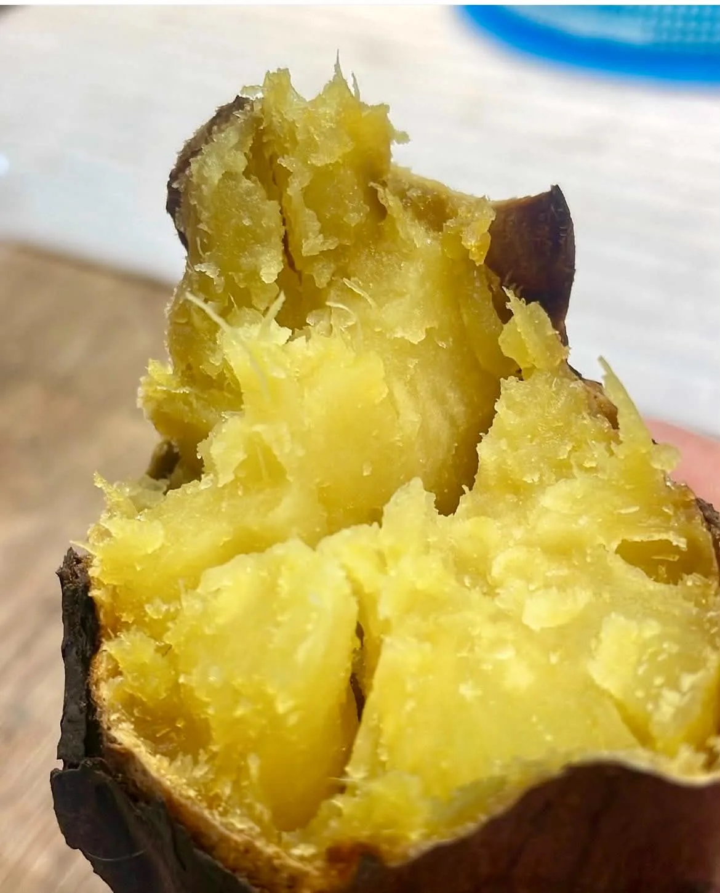
夏にはかき氷、冬には焼き芋など、 それぞれの季節に合わせた期間限定の商品もご用意しています。
その時期ならではの味を、 ぜひ楽しんでいただけたらうれしいです。
大阪・守口にあるくだもの屋「ニューあわや」。
ピンクと白のテントが目印のお店です。
毎日のくらしの中で、気軽に立ち寄っていただけるような あたたかいお店を目指しています。
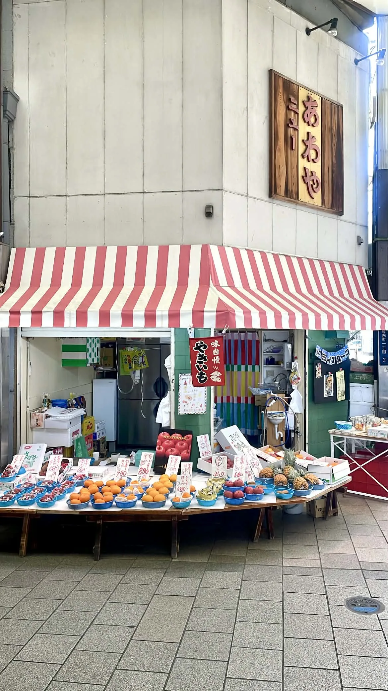
| 店名 | ニューあわや |
|---|---|
| 住所 | 大阪府守口市豊秀町1-2-3 |
| 営業時間 | 9:30〜15:00 |
| 定休日 | 日・祝日 |
| 電話番号 | 06-6992-0336 |